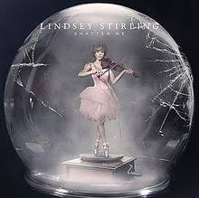

Song of the cage bird |
Album: Lindsey Stirling |
Artist: Lindsey Stirling | |
| Lindsey Stirling is the debut studio album by violinist and artist Lindsey Stirling, |
Master of Tides |
Album: Shatter me |
Artist: Lindsey Stirling | |
| Shatter Me is the second studio album of artist Lindsey Stirling, |